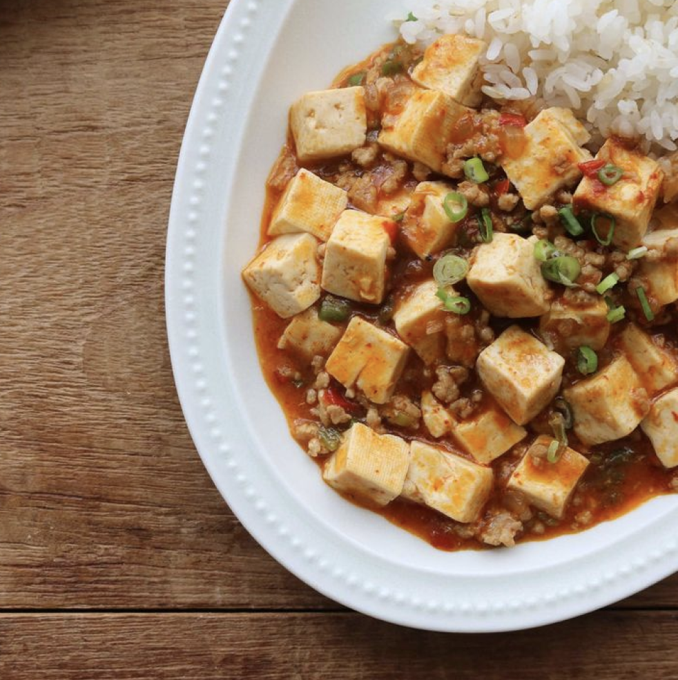
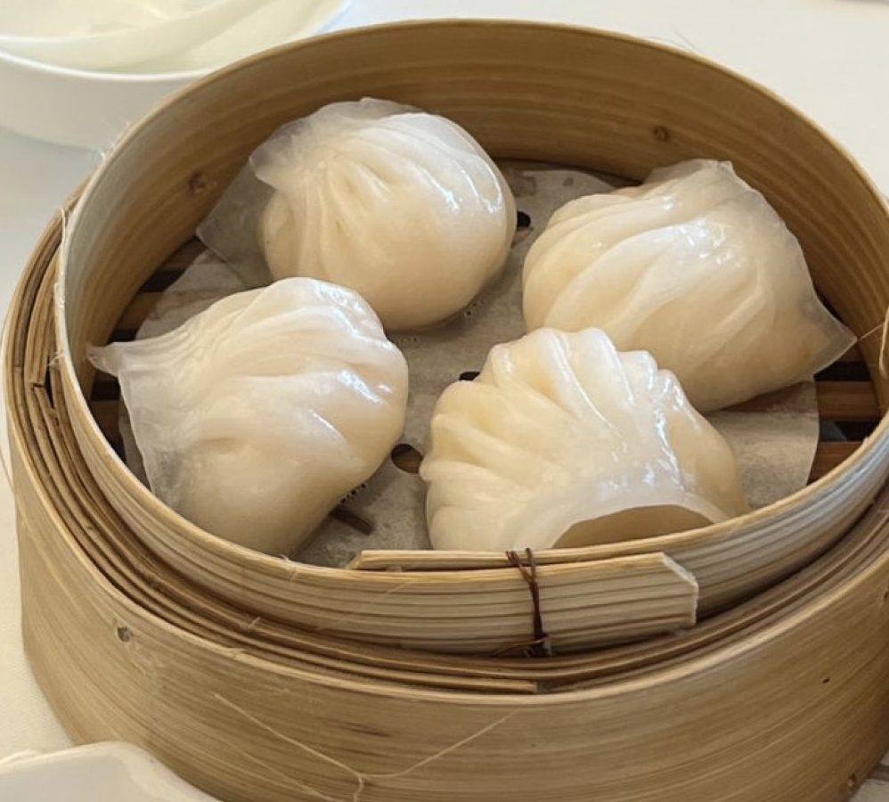
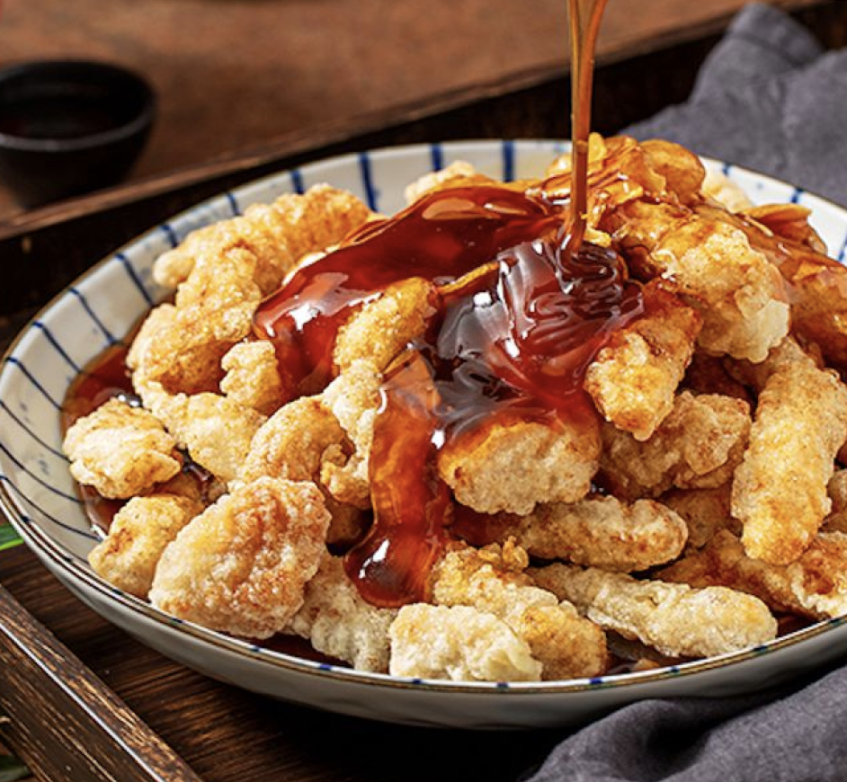

마파두부(麻婆豆腐)🍞
매콤하고 얼얼한 맛의 두부 요리로, 사천 요리의 대표 음식입니다.
특징:
-부드러운 두부와 다진 고기를 매콤하고 얼얼한 사천 고추와 화자오(산초)로 양념.
-감칠맛이 강하고 매운맛과 얼얼한 맛(마라 맛)이 어우러짐.

딤섬 (点心)🥟
광둥 요리의 일종으로 다양한 종류의 작은 만두와 찐빵, 바오쯔 등이 포함됩니다.
특징
-다양한 종류의 한입 크기 음식으로, 찌고 굽고 튀기는 등 다양한 조리법 사용.
-새우 딤섬, 하가우, 바오쯔 등 종류가 많음.
-홍차나 보이차와 함께 아침이나 점심에 먹는 광둥 지역 전통 음식.

탕수육 (糖醋里脊)🍤
특징:
-달콤새콤한 소스를 곁들인 돼지고기 튀김 요리입니다.
-바삭하게 튀긴 돼지고기에 달콤새콤한 소스를 곁들임.
-식초와 설탕, 토마토 소스가 주재료로 사용.